{% extends "../_base_template.html" %}
{% block title %}Lektion 8 - Assoziationen{% endblock %}

{% block sections %}
<section>
<section data-markdown>
<textarea data-template>
<i class="fas fa-flask"></i> Besprechung Hausaufgabe Aktivitätsdiagramm
=============================

Beispiellösung Code-Analyse "Anzeigen der ausgeliehenen Medien" der Hausaufgabe
* Aktionsnamen mit starkem Verb
* Keine Black Holes / Miracles (keine Knoten ohne Ein- oder Ausgänge)
* Eindeutige Bedingungen und vollständige Bedingungen

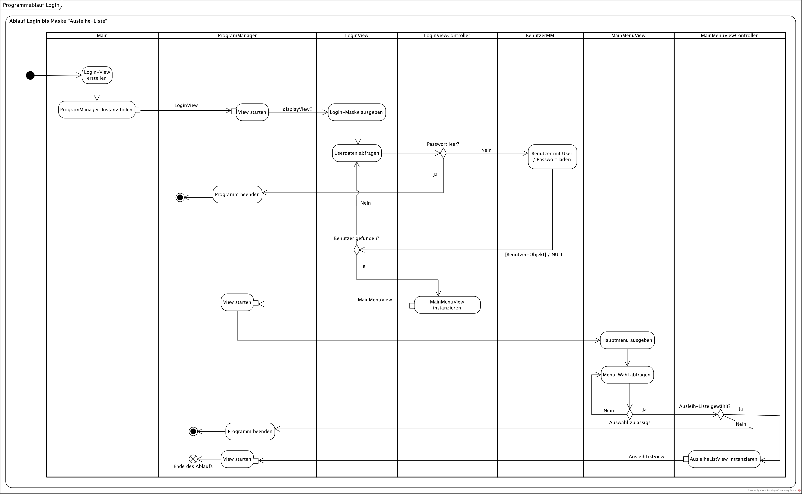

</textarea>
</section>
<section data-markdown>
<textarea data-template>
<i class="fas fa-flask"></i> Besprechung Hausaufgabe Sequenzdiagramme
=============================

Beispiellösung Code-Analyse-Sequenzdiagramm aus Einheit 7: ausgeliehene Medien anzeigen:

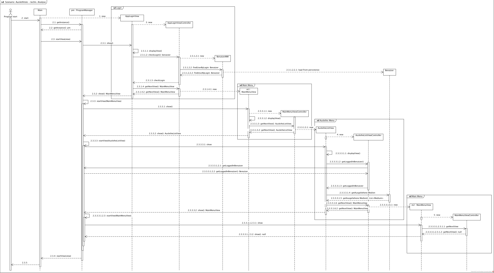

</textarea>
</section>
</section>

<section data-markdown>
<textarea data-template>
<i class="fas fa-graduation-cap"></i> OOD - Implementation von Assoziationen
=============================

Heutiges Ziel
-------------

* Sie wissen, wie die verschiedenen Assoziationen in der OOD-Phase modelliert und in Java implementiert werden.

### Hausaufgaben

* Fertigstellen der Assoziations-Implementationen
</textarea>
</section>

<section>
<section data-markdown data-separator-notes="^Note:">
<textarea data-template>
<i class="fas fa-graduation-cap"></i> Kardinalität von Assoziationen
===========

**Assoziationen** definieren **Beziehungen** zwischen Klassen / Objekten. Wie im richtigen Leben können Beziehungen unterschiedliche **Kardinalitäten** (Multiplizitäten) aufweisen:

Ein **Haus** hat mehrere Zimmer, ein **Zimmer** gehört zu einem Haus.

Welche Kardinalitäten (Multiziplitäten) kennen Sie, und wie heissen die? Wie zeichnet man die in UML?

* <!-- .element class="fragment" --> **„belongs to“, many-to-one, n:1:**<br />ein Objekt einer Klasse gehört zu einem Objekt einer anderen Klasse, stark gekoppelt
* <!-- .element class="fragment" --> **„has one“, one-to-one, 1:1:**<br />ein Objekt einer Klasse gehört zu einem Objekt einer anderen Klasse, schwach gekoppelt
* <!-- .element class="fragment" --> **„has many“, one-to-many, 1:n:**<br />ein Objekt einer Klasse hat viele (besitzt) Objekte einer anderen Klasse
* <!-- .element class="fragment" --> **„has and belongs to many“, many-to-many, n:m:**<br />ein Objekt einer Klasse hat und gehört zu vielen Objekten einer anderen Klasse

</textarea>
</section>

<section data-markdown data-separator-notes="^Note:">
<textarea data-template>
<i class="fas fa-graduation-cap"></i> Assoziationen - belongs to (n:1)
===========

Navigierbarkeit: ungerichtet (gilt in beide Richtungen, oder dem Entwickler überlassen): Es existieren auf beiden Seiten Zugriffsmöglichkeiten auf die andere Seite.

**Zugrifsmöglichkeiten** heisst in diesem Fall: Sie können via Getter/Setter die andere Seite abfragen / setzen, also die Objektbeziehung abfragen / erstellen.

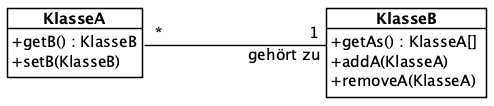

Navigierbarkeit: erlaubte und nicht erlaubte Navigation: Von Objekt A kann Objekt B abgefragt werden, umgekehrt nicht: Auf Seite KlasseB existiert keine Zugriffsmöglichkeit
auf KlasseA-Objekte.

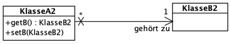

</textarea>
</section>

<section data-markdown data-separator-notes="^Note:">
<textarea data-template>
<i class="fas fa-graduation-cap"></i> Assoziationen - has one (1:1)
===========

Achtung: bei 1:1-Beziehungen ist es nicht praktikabel, beide Seiten mit der Kardinalität "1" zu versehen: Dies impliziert, dass immer beide Seiten gleichzeitig erstellt werden müssen (Henne-Ei-Problem).
Vielmals wird auf mind. einer Seite die Kardinalität "0..1" gewählt:

Navigierbarkeit: ungerichtet (gilt in beide Richtungen, oder dem Entwickler überlassen): Es existieren auf beiden Seiten Zugriffsmöglichkeiten auf die andere Seite.

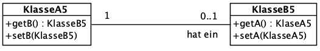

Navigierbarkeit: erlaubte und nicht erlaubte Navigation: Von Objekt A kann Objekt B abgefragt werden, umgekehrt nicht.

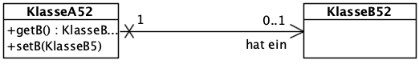

</textarea>
</section>

<section data-markdown data-separator-notes="^Note:">
<textarea data-template>
<i class="fas fa-graduation-cap"></i> Assoziationen - one-to-many (1:n)
===========

Navigierbarkeit: ungerichtet (gilt in beide Richtungen, oder dem Entwickler überlassen): Es existieren auf beiden Seiten Zugriffsmöglichkeiten auf die andere Seite.

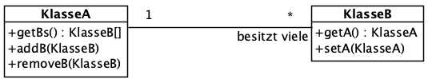

Navigierbarkeit: erlaubte und nicht erlaubte Navigation: Von Objekt A kann Objekt B abgefragt werden, umgekehrt nicht.

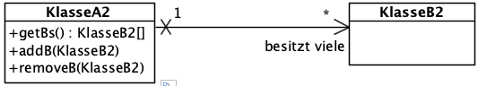

Darstellung durch Komposition: Dies impliziert, dass die "Many"-Seite nicht alleine existieren kann, dass die Objekte also gelöscht werden, wenn die "one"-Seite gelöscht wird:

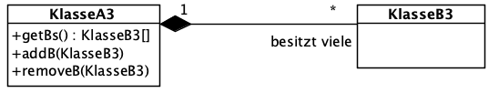

</textarea>
</section>

<section data-markdown data-separator-notes="^Note:">
<textarea data-template>
<i class="fas fa-graduation-cap"></i> Assoziationen - many-to-many (n:m)
===========

Navigierbarkeit: ungerichtet (gilt in beide Richtungen, oder dem Entwickler überlassen): Es existieren auf beiden Seiten Zugriffsmöglichkeiten auf die andere Seite.

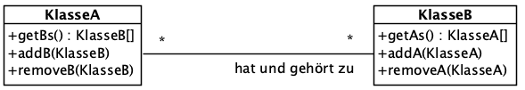

Navigierbarkeit: erlaubte und nicht erlaubte Navigation: Von Objekt A kann Objekt B abgefragt werden, umgekehrt nicht.

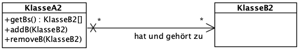


Many-to-One mit Assoziativklasse: Assoziation hat selber Attribute: Dies benötigen Sie bei komplexeren Zuweisgungen.

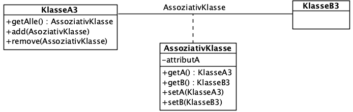

Beispiel: **Personen** (linke Seite) sind Mitarbeiter in **Firmen** (rechte Seite). **Mitarbeiter** ist dabei eine Assoziationsklasse, welche z.B. noch
den Lohn dieses Mitarbeiters bestimmt. So kann eine Person Mitarbeiter mehrerer Firmen mit jeweils unterschiedlichem Lohn sein.

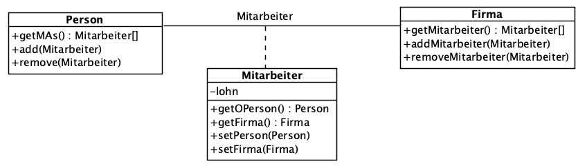

</textarea>
</section>
</section>

<section>
<section data-markdown data-separator-notes="^Note:">
<textarea data-template>
<i class="fas fa-graduation-cap"></i> Assoziationen - Implementation in Java
===========

Wie bilden Sie nun die gezeigten Assoziationen in Java ab? Implementieren Sie ein Beispiel:

* Was müssen Sie in Ihren Klassen ergänzen (Attribute, Methoden), um:
  * eine 1:1-Assoziation abzubilden?
  * eine 1:n-Assoziation abzubilden?
  * eine n:1-Assoziation abzubilden?
  * eine n:m-Assoziation abzubilden?
* Was müssen Sie ergänzen, um die Traversierbarkeit zu gewährleisten?

Jeder Schüler zeigt ein Beispiel einer Assoziation in Java: Erstellen Sie die notwendigen Klassen,
Attribute und Methoden, und stellen Sie diese den anderen dann vor (gemeinsam).
</textarea>
</section>
</section>

<section>
<section data-markdown data-separator-notes="^Note:">
<textarea data-template>
<i class="fas fa-graduation-cap"></i> Assoziationen - Konsistenz des Objektmodells
===========

Sie haben nun eine Assoziation von zwei Klassen in Java umgesetzt. Beispiel:

* ein Medium gehört zu einem Standort (belongsTo, n:1)
* ein Standort hat mehrere Medien (hasMany, 1:n)

Die beiden Klassen haben "wissen" jeweils vom anderen Objekt:

```java
// Auslesen des Standorts:
medium.getStandort();

// Auslesen der Medien:
standort.getMedien();
```

Nun weisen Sie ein neues Medium dem Standort zu:

```java
Medium m = new Buch();
standort.addMedum(m);
```

Was passiert nun bei der folgenden Anweisung?

```java
// Auslesen des Standorts:
m.getStandort();
```

<!-- .element class="fragment" --> Das Medium weiss noch nicht, dass es zum Standort gehört! Das Objektmodell ist somit nicht konsistent!
</textarea>
</section>

<section data-markdown data-separator-notes="^Note:">
<textarea data-template>
<i class="fas fa-graduation-cap"></i> Assoziationen - Konsistenz des Objektmodells
===========

Sie müssen also das Objektmodell bei Zuweisungen konsistent halten:

```java
Medium m = new Buch();
// der Standort erhält das Medium
standort.addMedum(m);

// gleichzeitig muss aber auch das Medium vom neuen Standort erfahren:
m.setStandort(standort);
```

Meine Empfehlung:

1. Halten Sie die Model-Klassen "dumm": Implementieren Sie die Zuweisungslogik nicht auf den einfachen Klassen:
   Sie entkoppeln so die Klassen voneinander.
2. Erstellen Sie eine so genannte "Facade"-Klasse (siehe https://java-design-patterns.com/patterns/facade/), welche
   die komplexe Logik kapselt: Eine Facade "versteckt" komplexe Vorgänge vor einem Client, im dem sie ein einfach zu bedienendes Interface anbietet:


```java
class MediumManager {
    // Facade-Methode, welche einfach zu bedienen ist:
    public void setMediumStandort(Medium m, Standort s) {
        // komplexe Logik wird intern abgehandelt:
        m.setStandort(s);
        s.addMedium(m);
    }
}
```

So ist diese Logik von den eigentlichen Modellen entkoppelt, und zentral an einem Ort vorhanden.
</textarea>
</section>
</section>


<section>
<section data-markdown>
<textarea data-template>
<i class="fas fa-wrench"></i> gemeinsame Implementationsaufgabe
=============================

Wir lösen folgende Aufgabe gemeinsam (exemplarisch):

„One-to-One“-Assoziation designen und implementieren: **„Person hat ein Benutzer“**, mit beidseitiger Traversierbarkeit

* UML: Tragen Sie die Assoziations-RICHTUNG ein: In welche Richtung müssen Daten abgerufen werden können? Welches Objekt
  benötigt Zugriff auf welches (andere) Objekt? Ist die Richtung überhaupt zu modellieren?
* **Verfeinern** /Implementieren Sie **das UML-Klassendiagramm** für die Beziehung „Benutzer“ und „Person“:
    * Tragen Sie die notwendigen Attribute UND Operationen in das Klassendiagramm ein.
* **Implementieren** Sie die Klassen `Benutzer` und `Person` mit der Beziehung „Person hat ein Benutzer“ (One-to-One) in Java.
  Programmieren Sie die dazu notwendigen Getter- und Setter-Methoden! Sorgen Sie dafür, dass das Objektmodell auf beide Seiten stimmt, in dem
  Sie entsprechende **"Facade-Methoden"** erstellen.
* Schreiben Sie eine kleine Testklasse, folgendes demonstriert:
    * erstellen Sie eine neue Person p. Durch die 1:1-Beziehung muss dadurch auch gleich ein Benutzer erstellt werden!
      Wie stellen Sie dies sicher?
    * demonstrieren Sie die Korrektheit des Datenmodells:
        * Geben Sie die Person aus (ausgehend vom Benutzer-Objekt)
        * Geben Sie den Benutzer aus (ausgehend vom Person-Objekt)
    * Erstellen Sie eine Löschen-Methode. Zeigen Sie, dass das Löschen gleich beide Objekte (Person und Benutzer) löscht!
</textarea>
</section>

<section data-markdown>
<textarea data-template>
<i class="fas fa-wrench"></i> Implementationsaufgabe Benutzer -> Person
=============================

Erweiterung des Analyse-UML:
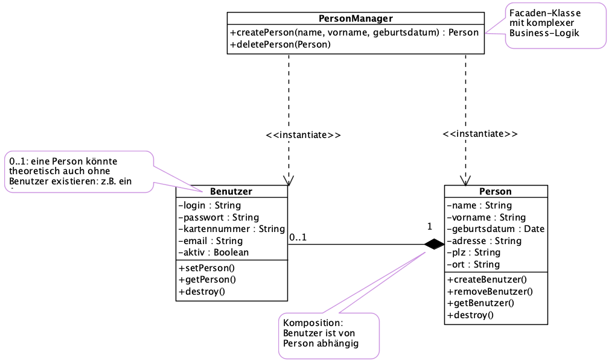

* Wir benötigen auf dem **Benutzer** Zugriffe auf die Person: Somit benötigen wir Getter- und Setter-Methoden auf Benutzer
* Wir benötigen auf der **Person** Zugriffe auf den Benutzer: Somit benötigen wir Getter- und Setter-Methoden auf Person
* Erstellen Sie eine Facade-Klasse, welche das Management des Objektmodells übernimmt!
* die destroy()-Methode auf Benutzer ist der Komposition geschuldet: Wenn der Benutzer von der Person gelöscht wird, muss das Benutzer-Objekt zerstört werden
  (kann nicht alleine überleben).

</textarea>
</section>
</section>

<section data-markdown>
<textarea data-template>
<i class="fas fa-wrench"></i> Selbständige Implementationsaufgabe 1
=============================

Sie lösen folgende Aufgabe selbständig:

**Aufgabe 1:** „One-To-Many“-Assoziation designen und implementieren: **„Medium-Interpret“**: ein Medium hat ein Interpret, Interpreten haben viele Medien

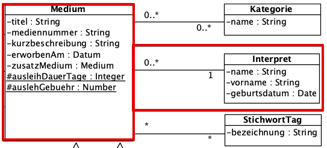


* Verfeinern / Implementieren Sie das UML-Klassendiagramm für die Beziehung „Medium“ und „Interpret“
* Ziele:
  * Auf einer Detailseite, welche der Interpret vorgestellt wird, werden auch gleich seine Werke (Medien) aufgelistet.
  * Auf der Detailseite eines Mediums ist ersichtlich, wer der Interpret ist.
* Tragen Sie die notwendigen Attribute UND Operationen ein: Was benötigen Sie alles für Operationen, Attribute?
* Tragen Sie die Assoziations-RICHTUNG ein: In welche Richtung müssen Daten abgerufen werden können?
* Implementieren Sie die Klassen Medium, resp. ein konkretes Medium wie z.B. Buch,  und Interpret mit der Beziehung „Medium gehört zu Interpret“ (many-to-one) in Java
* ** Sorgen Sie dafür, dass Ihr Objektmodell korrekt bleibt!** Beim Zuordnen eines Mediums zu einem Interpret müssen Sie auch die andere Richtung aktualisieren!
* Schreiben Sie eine kleine Testklasse, welche:
  * ein Interpret erstellt
  * mehrere Medien erstellt
  * diese einander zuordnet
  * das oben genannte Ziel verifiziert:
    * geben Sie, ausgehend vom Interpret-Objekt, die Liste der angehängten Medien aus
    * geben Sie, ausgehend von einem Medium, die Details des Interpreten aus

</textarea>
</section>

<section data-markdown>
<textarea data-template>
<i class="fas fa-wrench"></i> Selbständige Implementationsaufgabe 2
=============================

Sie lösen folgende Aufgabe selbständig:

**Aufgabe 2:** „One-To-Many“-Assoziation designen und implementieren: **„Medium hat mehrere Exemplare** (später für Ausleihe)

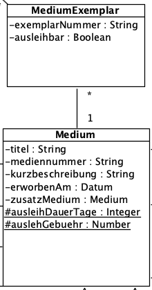

* Verfeinern / Implementieren Sie das UML-Klassendiagramm für die Beziehung „Medium“ und „Exemplar“
  * Tragen Sie die notwendigen Attribute UND Operationen ein
  * Tragen Sie die Assoziations-RICHTUNG ein: In welche Richtung müssen Daten abgerufen werden können?
* "Medium" an sich ist eine abstrakte Klasse und kann nicht instanziert werden: Implementatieren Sie mind. 1 implementierende Klasse (z.B. **Buch**).
* Implementieren Sie die Klassen Medium und MediumExemplar" mit der Beziehung „Medium hat mehrere Exemplare (many-to-one) in Java
* Schreiben Sie eine kleine Testklasse, welche:
  * ein Medium (z.B. Buch) erstellt
  * mehrere Exemplare dieses Mediums erstellt und richtig zuweist
  * ein Medium aus dem Sortiment nimmt (löscht): Was muss dann alles passieren?


</textarea>
</section>

<section data-markdown>
<textarea data-template>
<i class="fas fa-wrench"></i> Selbständige Implementationsaufgabe 3
=============================

Sie lösen folgende Aufgabe selbständig:

**Aufgabe 3:** „Many-To-Many“-Assoziation designen und implementieren: **„Medium hat mehrere Kategorien, Kategorie hat mehrere Medien“**

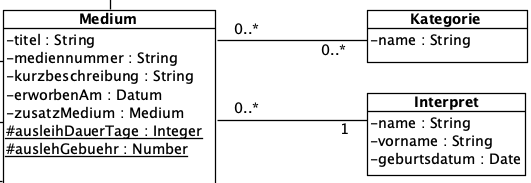

* Verfeinern / Implementieren Sie das UML-Klassendiagramm für die Beziehung „Medium“ und „Kategorie“
  * Tragen Sie die notwendigen Attribute UND Operationen ein
  * Tragen Sie die Assoziations-RICHTUNG ein: In welche Richtung müssen Daten abgerufen werden können?
  * Beziehen Sie auch die vererbten Klassen mit ein (z.B. Buch, CD etc.)
* Implementieren Sie die Klassen **Medium** und **Buch** (erbt von Medium) und Kategorie mit der Beziehung „Medium hat und gehört zu Kategorien“ in Java
* Schreiben Sie eine kleine Testklasse, welche:
    * mehrere Kategorien erstellt
    * ein Buch (Medium) erstellt
    * Diesem Buch mehrere Kategorien zuordnet
    * alle Medien einer Kategorie ausgeben kann (Aus Sicht Kategorie: welche Medien gehören zu dieser Kategorie)
</textarea>
</section>

<section data-markdown>
<textarea data-template>
<i class="fas fa-flask"></i> Hausaufgaben
=============================

Lösen der 3 Aufgaben:
* Ziel: Sie können Ihre Lösung am Beamer erläutern. Ich werde einige von Ihnen auffordern, ihre Lösung zu präsentieren.
* Quellcode / Java-Snippet
* UML-Diagramm (Bild, PNG) der jeweiligen Assoziation

</textarea>
</section>
{% endblock %}
